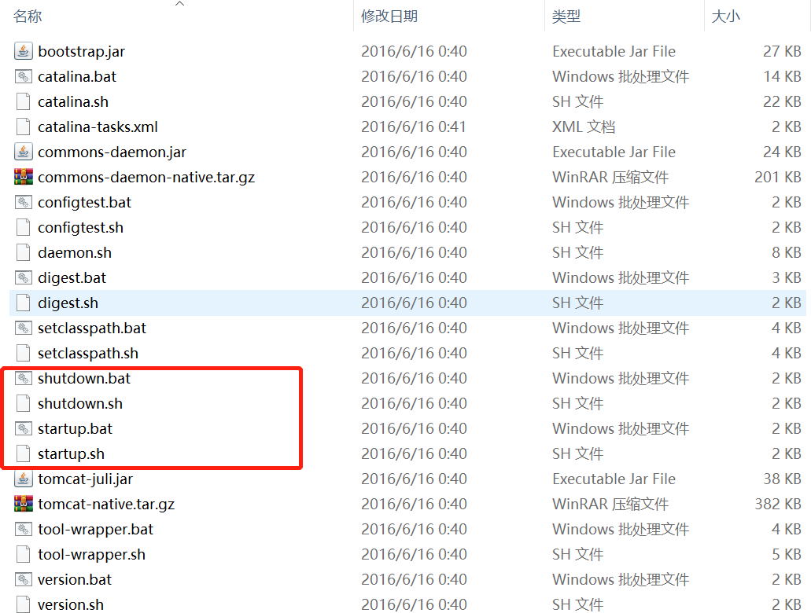
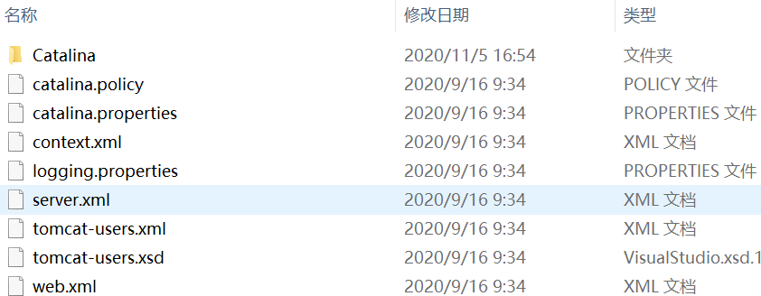
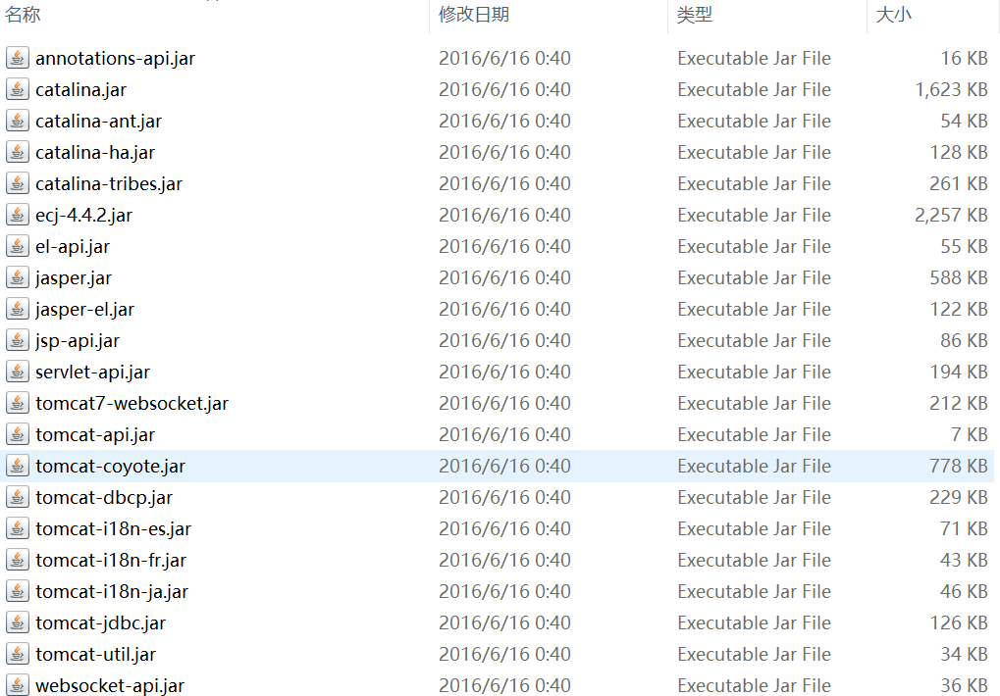
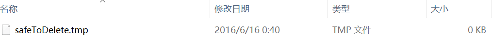
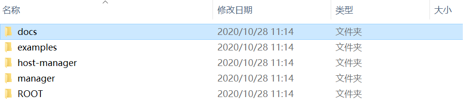

Tomcat目录结构
Tomcat 解压完成以后会看到如表1所示的很多目录，这些目录都有各自的用途，初学者有必要了解一下。
下面是几个常用的 Tomcat 命令：
下面是常用到的几个文件：
在 Windows 系统中，控制台的输出日志在 catalina.xxxx-xx-xx.log 文件中；在 Linux 系统中，控制台的输出日志在 catalina.out 文件中。
| 子目录 | 说明 |
|---|---|
| bin | 命令中心（启动命令，关闭命令……） |
| conf | 配置中心（端口号，内存大小……） |
| lib | Tomcat 的库文件。Tomcat 运行时需要的 jar 包所在的目录。 |
| logs | 存放日志文件。 |
| temp | 存储临时产生的文件，即缓存。 |
| webapps | 存放项目的文件，web 应用放置到此目录下浏览器可以直接访问。 |
| work | 编译以后的 class 文件。 |
1. bin 目录
bin 目录用来存放 Tomcat 命令，主要分为两大类，一类是以.sh结尾的 Linux 命令，另一类是以.bat结尾的 Windows 命令。很多环境变量都在此处设置，例如 JDK 路径、Tomcat 路径等。

图1：bin 目录包含的内容
图1：bin 目录包含的内容
下面是几个常用的 Tomcat 命令：
- startup.sh/startup.bat：用来启动 Tomcat；
- shutdown.sh/shutdown.bat：用来关闭 Tomcat；
- catalina.bat/ catalina.bat：用来设置 Tomcat 的内存。
2. conf 目录
conf 目录主要是用来存放 Tomcat 的配置文件，如下图所示：

图2：conf 目录包含的内容
图2：conf 目录包含的内容
下面是常用到的几个文件：
- server.xml 用来设置域名、IP、端口号、默认加载的项目、请求编码等；
- context.xml 用来配置数据源等；
- tomcat-users.xml 用来配置和管理 Tomcat 的用户与权限；
- web.xml 可以设置 Tomcat 支持的文件类型；
- 在 Catalina 目录下可以设置默认加载的项目。
3. lib 目录
lib 目录主要用来存放 Tomcat 运行需要加载的 jar 包。

图3：lib 目录包含的内容
图3：lib 目录包含的内容
4. logs 目录
logs 目录用来存放 Tomcat 在运行过程中产生的日志文件，清空该目录中的文件不会对 Tomcat 的运行带来影响。在 Windows 系统中，控制台的输出日志在 catalina.xxxx-xx-xx.log 文件中；在 Linux 系统中，控制台的输出日志在 catalina.out 文件中。
5. temp 目录
temp 目录用来存放 Tomcat 在运行过程中产生的临时文件，清空该目录中的文件不会对 Tomcat 的运行带来影响。

图4：temp 目录包含的内容
图4：temp 目录包含的内容
6. webapps 目录
webapps 目录用来存放应用程序（也就是通常所说的网站），当 Tomcat 启动时会去加载 webapps 目录下的应用程序，我们编写的 Servlet 程序就可以放在这里。Tomcat 允许以文件夹、war 包、jar 包的形式发布应用。

图5：webapps 目录包含的内容
图5：webapps 目录包含的内容
7. work 目录
work 目录用来存放 Tomcat 在运行时的编译文件（也即 class 字节码文件），例如 JSP 编译后的文件。清空 work 目录，然后重启 Tomcat，可以达到清除缓存的作用。关注公众号「站长严长生」，在手机上阅读所有教程，随时随地都能学习。内含一款搜索神器，免费下载全网书籍和视频。

微信扫码关注公众号